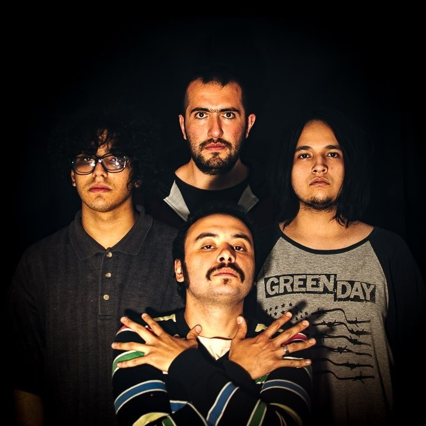
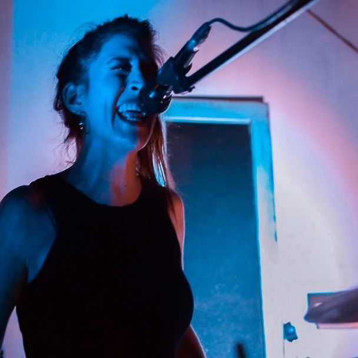
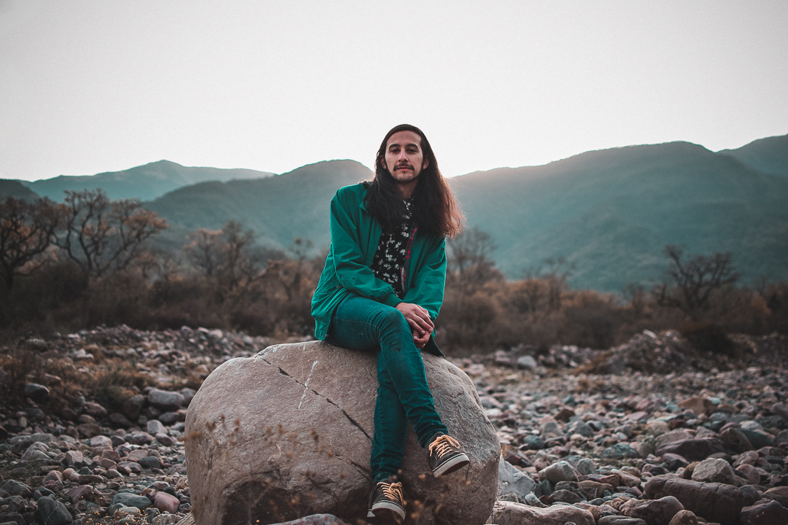
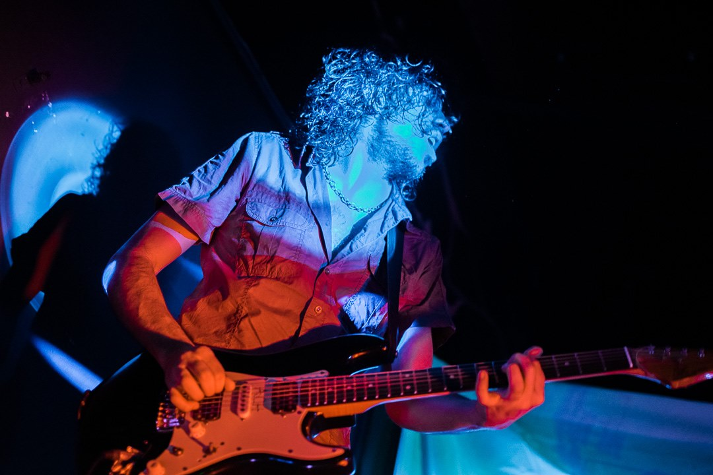
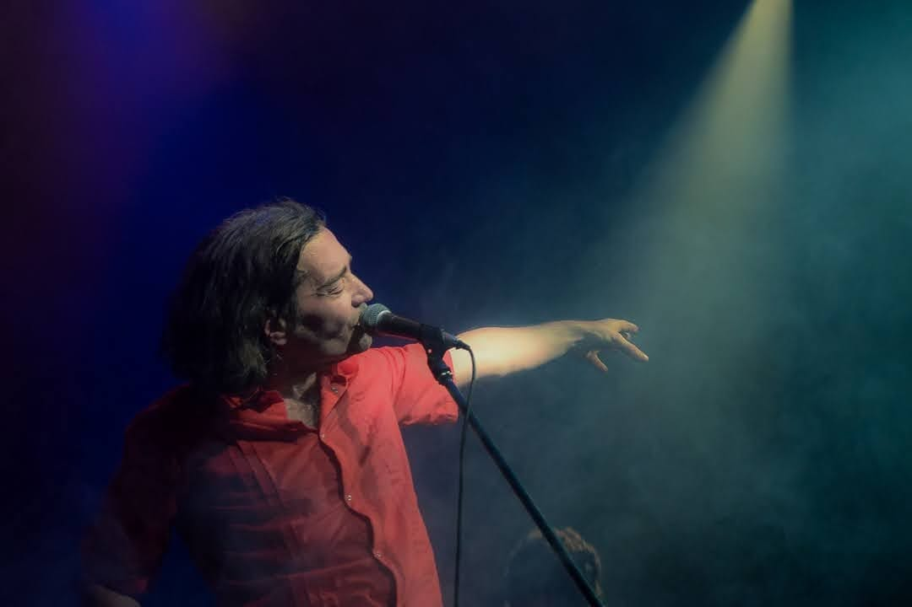

Desde chica siempre me llamaron la atención las cámaras y el mundo de la fotografía y la imagen. El poder transmitir la emoción de ese momento único y mágico; y poder compartir mi perspectiva de esa sensación.
Es mi manera de expresarme y mostrar como percibo y veo la vida.
Me inspira la música, es un pilar fundamental dentro de mi arte. Me apasiona esa sensación de poder llegar a captar esos momentos justos, de hacerte sentir que estás ahí y estas viviendo lo mismo que yo.
Pude compartir experiencias con muchos artistas de diferentes rubros a nivel local y nacional, donde me dieron la posibilidad de ser yo y mi creatividad, también la confianza de dejar todo en mis manos.
Cuento con 6 años de experiencia en lo audiovisual, estoy capacitada para enfrentar cualquier desafío en lo que respecte a edición y realización de videos y fotografía. Trabaje con artistas no solo locales, sino a nivel Nacional, filmando videos musicales, backstages, recitales y eventos en vivo. Cuento con la creatividad y el ojo artístico que tu material necesita.